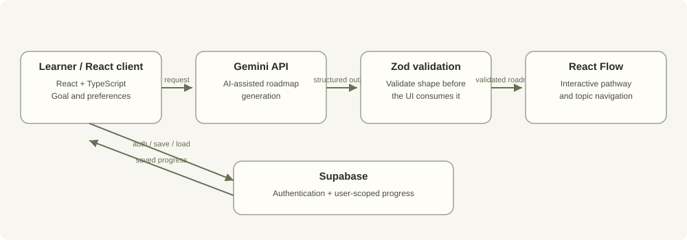

Validate at the boundary
Schema validation can prevent malformed AI output from reaching components that expect a defined shape. It does not guarantee the generated advice is accurate, well sequenced, or pedagogically effective.
Project case study · Software development · AI-enabled learning product
A learning platform that turns a learner's goal into a structured roadmap, presents it as an interactive path, and connects learning activities to saved progress.
A roadmap is useful only when a learner can understand the next step, move between topics, and return to their progress. The engineering challenge is not just generating text: it is turning an AI response into structured application data and connecting that structure to a persistent learning experience.
The design separates generation, shape validation, interactive presentation, and user progress. That separation makes failures easier to locate and gives the UI a clear boundary before it consumes AI-generated data.

The repository also documents curated roadmaps, assessment-based skill-level updates, learning resources, TanStack Query, and responsive UI components. The source repository is the implementation reference.
Schema validation can prevent malformed AI output from reaching components that expect a defined shape. It does not guarantee the generated advice is accurate, well sequenced, or pedagogically effective.
A graph makes dependencies and navigation easier to inspect than a long generated paragraph. It adds layout and small-screen usability considerations that should be tested.
User-owned progress requires access controls, not just a logged-in frontend. The repository documents Row Level Security requirements and a migration prerequisite before production use.
AI and persistence are external boundaries. An unavailable service must not be confused with successful generation or a successful save.
Planned, not yet verified
A future fallback view should keep the application shell and navigation reachable when a recoverable Gemini or Supabase request fails. It should explain which action is unavailable, offer a safe retry where appropriate, and preserve only previously confirmed saved state. It should not collect extra data simply because a failure occurred, and it must never imply that an unsuccessful write succeeded.
This is a proposed resilience improvement, not a claim that the current app already provides full fallback behaviour or a measured availability guarantee.
The repository documents local dependency setup and the commands npm run lint and npm run build. Use the README and environment-variable documentation for current requirements. This case study does not mark those commands as passed without a dated execution record.
| Check | Evidence state |
|---|---|
| Lint and build | Commands documented; latest run output not published here. |
| Authentication and progress persistence | Described in project documentation; test evidence pending. |
| Fallback behaviour | Planned; implementation and failure-path tests pending. |
The detailed contribution breakdown will distinguish personally implemented modules, integration work, design decisions, and inherited or scaffolded components once the project walkthrough is added. Screenshots, short recordings, and reproducible test outputs will be linked when available rather than represented as current evidence.
No verified learner-outcome, roadmap-quality, or availability metrics are published on this page. Structural validation checks data shape, not learning quality. The documented RLS migration and deployment prerequisites must be met before treating the application as production-ready. Future evaluation should record invalid-output rate, successful roadmap creation, persistence failure behaviour, and the test environment.